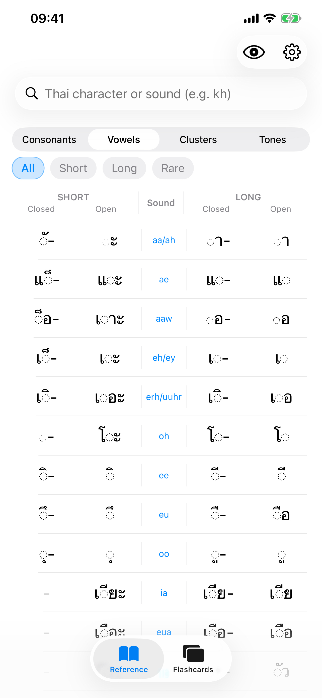
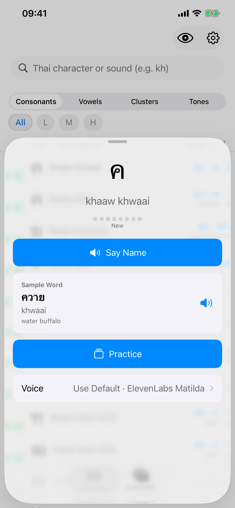
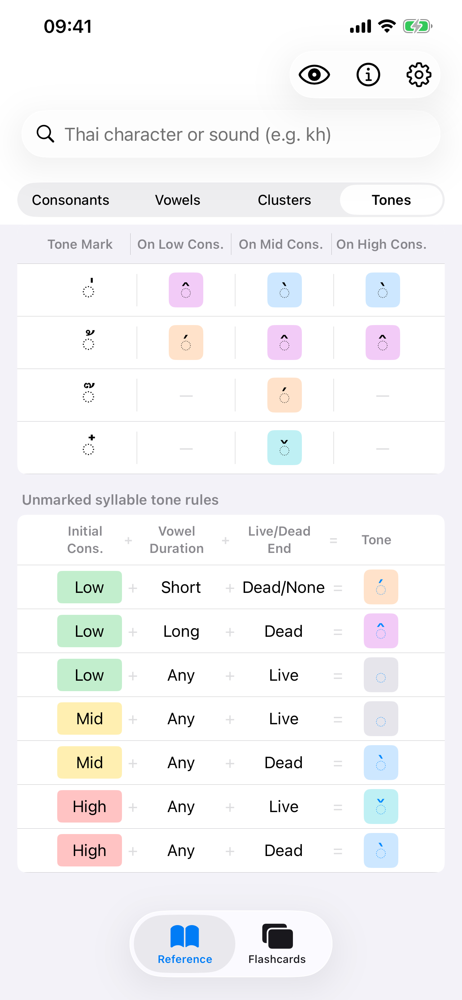
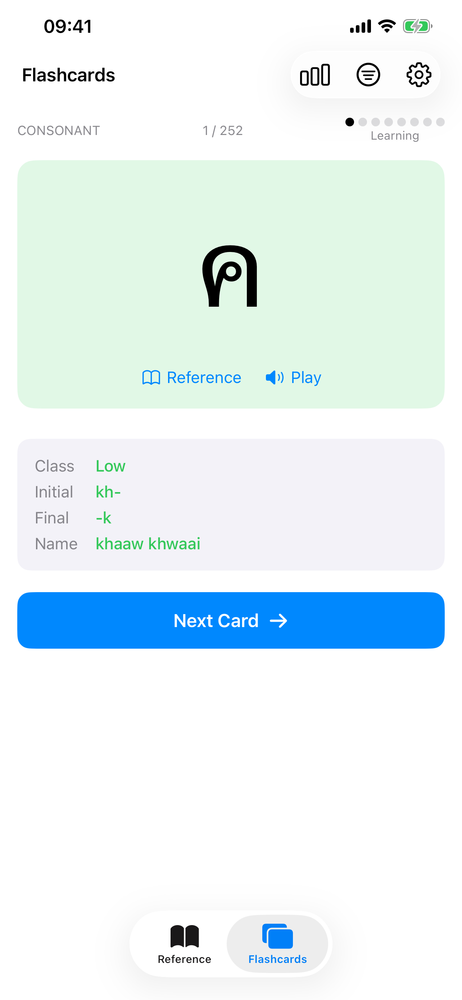
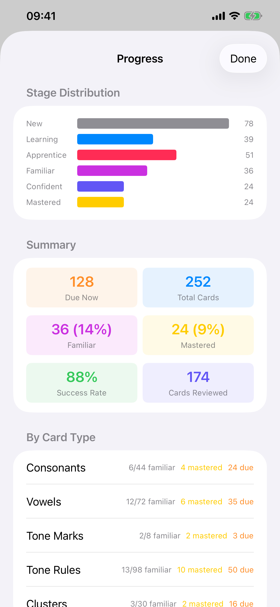

What’s new in 1.1
- Choose between ElevenLabs Matilda, Google Neural2-C and Google Chirp3-HD Kore, or use an installed Thai system voice.
- Override the pronunciation voice for individual reference items.
- Practice reading by hiding transcriptions until you reveal them.
- Improved audio fallbacks, VoiceOver support and flashcard feedback.
-
Quick lookup first
Find consonants, vowels, clusters and tones in seconds, laid out the way the classic cheat sheet teaches them — with search and filters.
-
Choose your voice
Hear every entry with three bundled voices, use an installed Thai system voice, or set an override for a specific item.
-
Practice your way
Hide transcriptions for reading practice, then reinforce what you look up with complementary SRS flashcards.
-
Private by design
No ads, analytics, tracking or third-party SDKs. Your progress stays on your device unless you enable iCloud sync.
-
English & French
The interface is fully localized in English and French; community translations are welcome.
-
Open source
MIT-licensed and built in the open. Report issues, suggest features or contribute on GitHub.
A note on accuracy
ThaiSheet is built by a Thai learner, not a Thai speaker. The reference data has been assembled and checked with care, but it may contain errors — and that is exactly why this app is open source: so mistakes can be found and fixed in the open.
Every bundled recording is available in the sound catalog, with a direct link for reporting an audio problem. The current synthesized recordings are provisional rather than definitive pronunciation references, and the longer-term goal is to produce a reviewed recording set with a native Thai speaker.
Contributions are more than welcome, whether technical or Thai-language expertise. If you spot an error or want to improve something, open an issue or a pull request on GitHub.